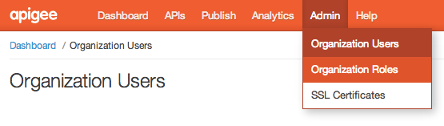

[toc]
This topic explains how to create and manage organization users. You must be an organization administrator to perform these tasks.
Organization users are given explicit permission by the organization administrator to create, read, edit, and/or delete entities in an Apigee Edge organization. Permissions are role-based, where a role conveys a specific, targeted set of permissions. This permission scheme is also called role-based access control, or RBAC for short.
Organization users are typically members of your API team who develop and test APIs, run reports, and perform other API admin tasks. Do not confuse organization users with app developers, the consumers of your APIs. The process of onboarding app developers and managing their access to your APIs is an entirely separate topic. See http://docs.apigee.com/node/16051.
Also, note that topic applies to API management, not API BaaS, which has its own user management framework.
Organization users interact with a number of entities, including:
The degree of interaction permitted depends on the role or roles that are assigned to the user by the organization administrator. See also http://docs.apigee.com/node/18361.
You must be an org administrator
You must be an Apigee Edge organization administrator to create users and assign roles. Only organization admins can see and use the Admin menu, which is for managing organization users.

The Organization Users table on the Admin > Organization Users page lists all of the users attached to the current organization. For each user you can see:
By default, all users associated with an organization can view details about other organization users, such as email address, first name, and last name. Only users with the Organization Administrator role can add or update other organization users.
To add an organization user:
If the user already has an Apigee account, she will see the new organization after logging into Apigee.
If the new user doesn't yet have an Apigee account, she is sent email instructions for account activation, password reset, and logging in. The user can log in with either:
You can add one or more roles to a user when you create a new user or if you edit an existing user. See also http://docs.apigee.com/node/18361. You can also edit the user's first name and last name.
If a user has multiple roles assigned, the greater permission takes precedence. For example, if one role doesn't allow the user to create API proxies, but another role does, then the user can create API proxies. In general, it is not a common use case to assign users multiple roles.
To remove a user from an organization, you must be an org administrator.
This only removes the user from the current account. If the user is a member of multiple accounts, they remain in the system.
To remove a user from Apigee completely, contact Apigee Support.